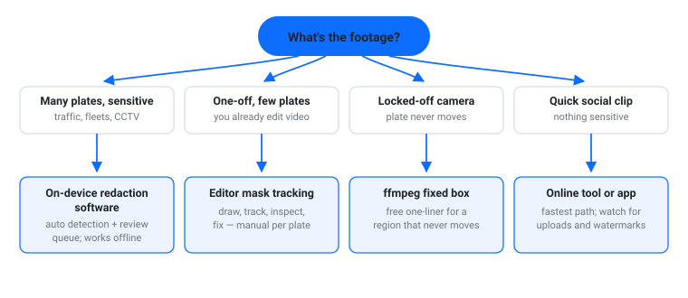
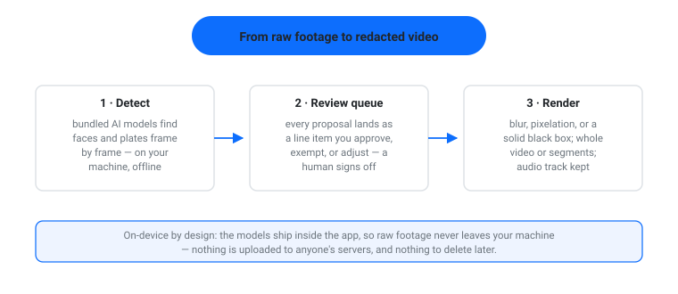

Dashcam clips, motovlogs, fleet and delivery footage, drone flyovers, parking-lot CCTV — license plates are in almost every outdoor video. And a plate is often a stronger identifier than a face: it points to a registered owner, not just a stranger who walked through the frame. If you publish footage, plates are usually the first thing you want unreadable.
The hard part is the same one that faces cause: plates move. A static blur box fails the moment the car changes lanes. This guide compares four practical ways to blur license plates in a video in 2026, and shows when each one holds up.

This is the category built for the job. Instead of masking every plate by hand, the software detects them frame by frame, proposes the redactions, and lets you approve them before anything is rendered.
We build one: Video Redactor. It finds faces and license plates automatically — the AI models are bundled inside, so detection runs on your computer and footage never leaves your machine. Every proposed redaction lands in a review queue: approve, exempt, or adjust, then export with blur, pixelation, or a solid black box, for the whole video or selected segments. One download covers Mac (Apple Silicon) and Windows; the audio track is preserved. It’s $49.99 one-time.
Automatic detection matters more with plates than faces. Traffic footage can carry dozens of plates, appearing for a few frames each. Manual masking scales linearly with plate count; detection doesn’t. The review queue is the safety net: detectors miss partial plates, glare, and brief appearances, so a human signs off before export.

Good: dashcam and motovlog channels, fleet and CCTV operators, researchers, FOIA or insurance footage, anyone doing this weekly.
Trade-off: it’s a paid tool, and it’s deliberate about redaction (review queue, consistent output) rather than a quick effects toy.
If you already edit video, DaVinci Resolve’s free tier does this manual tracking well: drop a mask over the plate, blur what’s inside it, run the tracker forward, then step through and nudge any frames where the track slips (Blackmagic’s page lists what the paid Studio edition adds on top — including Magic Mask and optical blur, its smarter assisted tools). Exact menu steps differ by editor, but the loop is the same: mask, track, inspect, fix.
The catch is scale and certainty. One plate is a five-minute job. Forty plates in an intersection clip is an afternoon. And nothing in a manual workflow tells you a plate was missed — at second 43, in the mirror, half-visible at the frame edge. You find misses by watching the whole timeline back.
Good: editors who already live in the tool, one-off projects, zero budget.
Trade-off: manual per plate, slow at volume, no completeness check.
If the camera never moves — a doorbell cam, a fixed parking camera, a tripod shot — and the plate stays in one region, you don’t need tracking. A single ffmpeg command blurs a fixed rectangle:
ffmpeg -i input.mp4 -filter_complex \ "[0:v]crop=280:80:640:700,boxblur=10[b]; \ [0:v][b]overlay=640:700:enable='between(t,5,60)'" \ -c:a copy output.mp4
That crops a 280×80 region at position (640, 700), blurs it, overlays it back between seconds 5 and 60, and copies the audio untouched. Adjust the geometry for your frame; the filters are documented in the official ffmpeg filter reference.
Good: locked-off shots, scripted batch jobs, servers.
Trade-off: the box is dumb. If the car stops short, or a second car crosses the region, the redaction fails silently — and nobody sees the failure in the output unless they look for it.
For a short clip, a browser tool or mobile app is the fastest path: upload, let the automatic plate finder work, export. Several now do AI plate detection with tracking, and some are free to start.
Read the privacy trade before using one. The tools work by uploading your footage to their servers — the video leaves your machine before it’s redacted. For a motovlog of a public street, that’s usually fine. For incident footage, an HR case, or anything with a legal angle, it’s the inverted risk again: the clips that most need redaction are the ones you least want on someone else’s server. Watermarks and export limits are common on free tiers.
Good: speed, zero learning curve, non-sensitive clips.
Trade-off: upload-first processing, watermarks, varying tracking quality.
| Method | Cost | Auto plate detection | Works offline | Best for |
|---|---|---|---|---|
| On-device redaction software | $49.99 one-time | Yes — plus review queue | Yes | Sensitive or repeated work |
| Desktop editor (mask tracking) | Free–paid | No — manual mask | Yes | Editors, one-offs |
| ffmpeg fixed region | Free | No — static box | Yes | Locked-off cameras, scripts |
| Online / mobile tools | Free–cheap | Varies by tool | No | Quick social clips |
If you publish footage regularly, the first row is the one that keeps paying off: detection handles the volume, the review queue catches the misses, and on-device processing keeps raw footage where the responsibility for it lives.
It’s tempting to treat a plate as public information — anyone walking past the car can read it. Privacy law mostly doesn’t see it that way. Under the UK GDPR, CCTV and video surveillance footage is personal data, and number-plate recognition is treated as part of that: the UK’s ICO video surveillance guidance covers organisations running CCTV, body-worn video, drones, and automatic number plate recognition (ANPR) — plates, combined with context like time and location, are information that relates to an identifiable person. Purely personal use generally sits outside the regime, but that line is easy to cross: publish the footage publicly and you’re no longer purely personal.
In the US there is no single rule for private publishers of dashcam clips; practice varies by state, platform, and purpose. But the direction is consistent: broadcasters blur plates, FOIA releases and insurance claims treat footage as redactable records, and platforms expect it for anything involving incidents or minors. If your video could end up in a legal, HR, or compliance context, plate blurring isn’t cosmetic — it’s the redaction standard, with detection, human review, and consistent application.
(For the document side of the same problem, see our comparisons of redaction software and redacting a PDF without Adobe Pro; and for the logic of why footage shouldn’t be uploaded for AI processing at all, see redacting PII before sending documents to an LLM.)
Video Redactor finds faces and license plates automatically, tracks anything you draw a box around, and renders the redacted video entirely on your own computer — nothing uploaded. See how it works.
Depends on where you are and what you do with the footage. Purely personal use generally sits outside data protection law in the UK; publishing footage publicly, or any business use, changes the analysis, and organisations have formal duties. This isn’t legal advice — when the footage matters, blur the plates and check the applicable rules for your jurisdiction.
Yes, with purpose-built tools: Video Redactor detects faces and license plates in the same pass and queues both for your review. In a manual editor workflow they’re separate masks, tracked separately, which is part of why manual work doesn’t scale.
A heavy blur or pixelation applied consistently across frames is not practically reversible; a light blur can sometimes be partially attacked with AI enhancement tools. For sensitive footage, use a strong blur or a solid black box — and check the output, which is what a review queue is for.
Cuts break continuity and audio sync, and in moving footage the plate is rarely alone in the frame — you’d lose the scene you’re trying to show. Blurring keeps the video intact and the story watchable. A crop can work for a single still, not for a moving clip.
I'm Muhammad Karim — transportation researcher; I build privacy-first, local-first tools: Video Redactor, PrivateRedact, Self-Hosted RAG, MeetingMint, AudioRecord, TunnelMate.